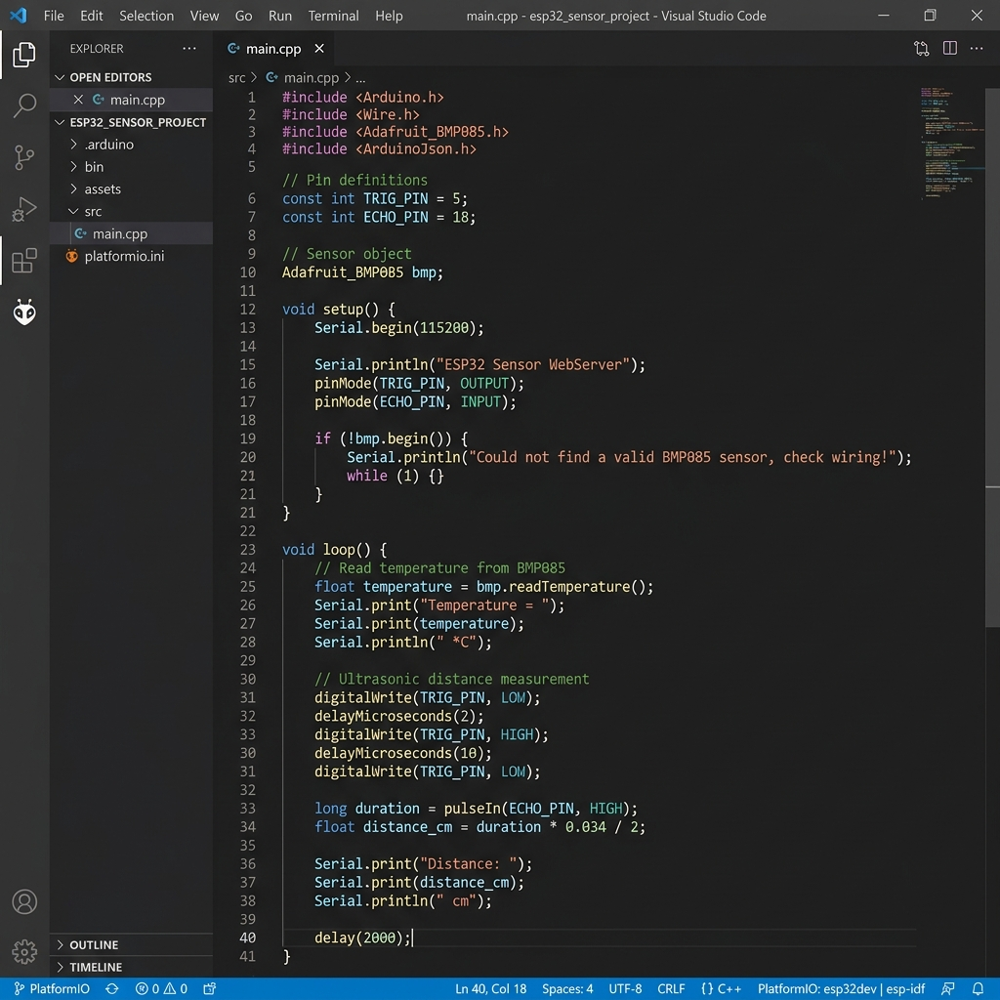
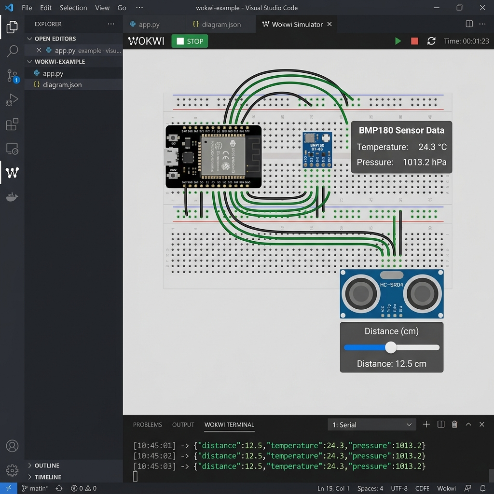
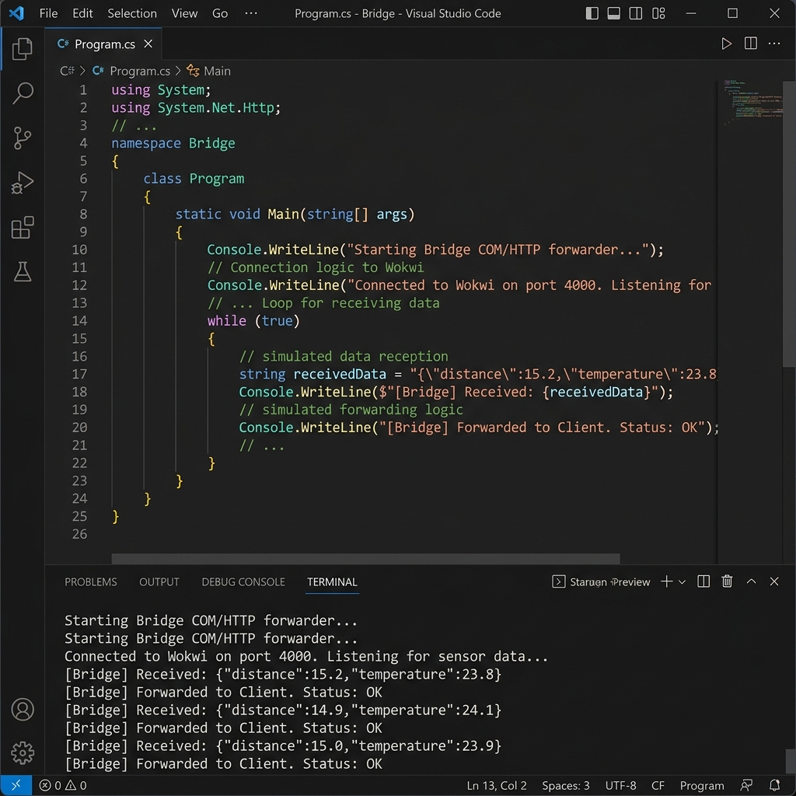
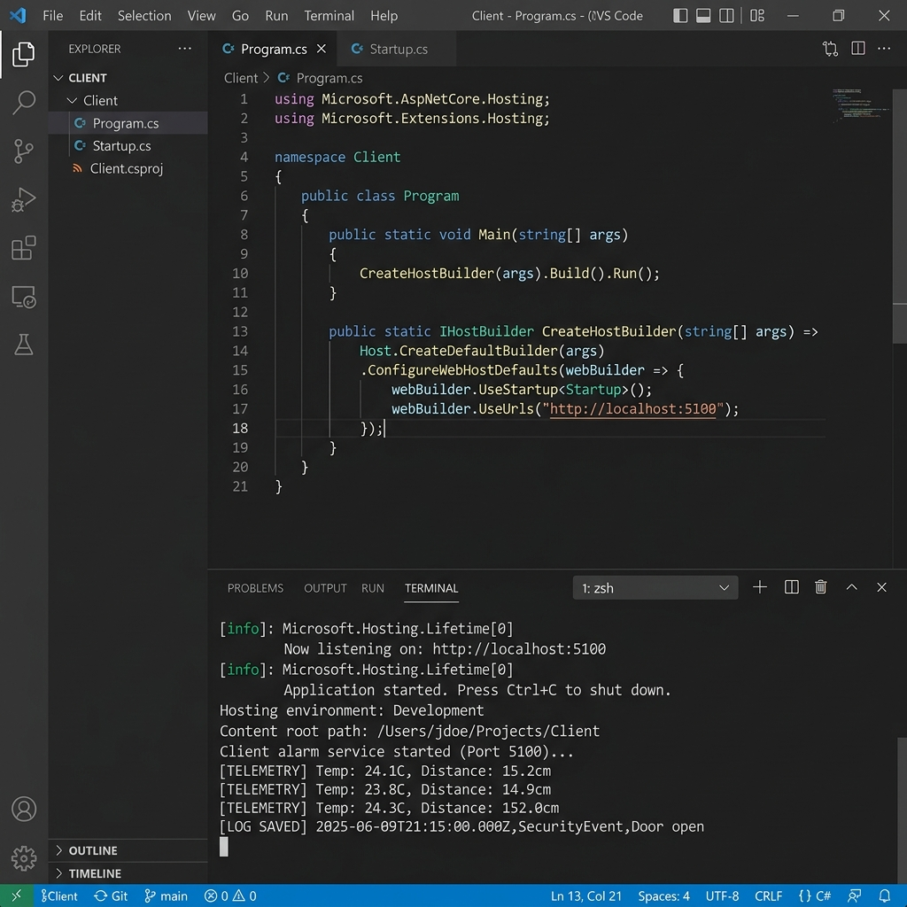
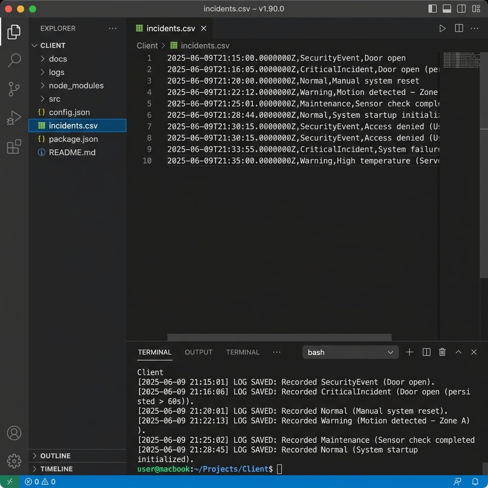
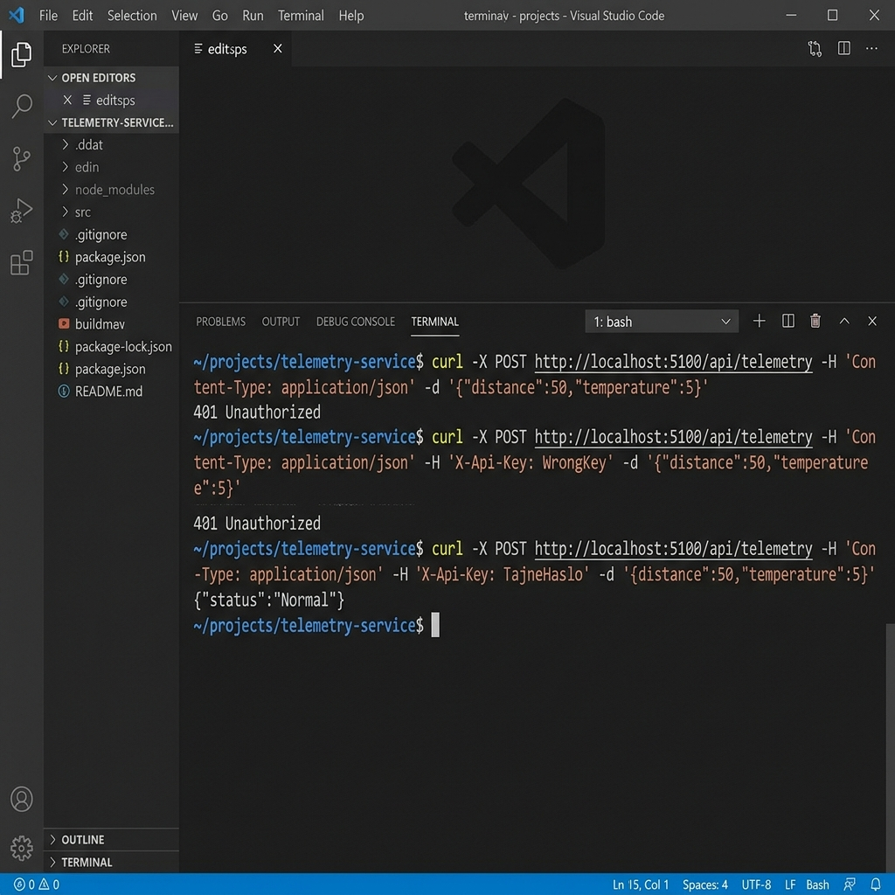

Projekt polega na stworzeniu systemu monitoringu sejfu przy uzyciu mikrokontrolera ESP32 symulowanego w srodowisku Wokwi. System wykorzystuje dwa czujniki - BMP180 do pomiaru temperatury oraz HC-SR04 do pomiaru odleglosci. Dane z czujnikow sa przesylane przez port szeregowy w formacie JSON, nastepnie odbierane przez aplikacje Bridge i przekazywane do serwera Client, ktory analizuje je pod katem anomalii.
Calosc projektu zostala zrealizowana przy uzyciu VS Code z rozszerzeniami PlatformIO i Wokwi. Czesc serwerowa (Bridge i Client) napisana jest w jezyku C# z uzyciem .NET 7.0.
Firmware ESP32 znajduje sie w pliku main.cpp. Kod odczytuje temperature z czujnika BMP180 przez magistrale I2C oraz odleglosc z czujnika ultradzwiekowego HC-SR04. Odczyty sa serializowane do formatu JSON za pomoca biblioteki ArduinoJson i wysylane na port szeregowy co 2 sekundy.

Symulacja zostala uruchomiona w rozszerzeniu Wokwi for VS Code. Na schemacie widoczna jest plytka ESP32 DevKit C polaczona z czujnikiem temperatury BMP180 (piny SDA=21, SCL=22) oraz czujnikiem ultradzwiekowym HC-SR04 (TRIG=5, ECHO=18). W monitorze szeregowym widac dane JSON wysylane przez firmware.

Aplikacja Bridge laczy sie z portem RFC2217 symulacji Wokwi (TCP na porcie 4000) i odczytuje dane JSON z portu szeregowego. Nastepnie przesyla je przez HTTP POST na adres http://localhost:5100/api/telemetry do aplikacji Client. Kazde zadanie jest uwierzytelniane naglowkiem X-Api-Key.

Aplikacja Client to serwer HTTP oparty na ASP.NET, ktory nasuchuje na porcie 5100. Po odebraniu danych telemetrycznych sprawdza czy temperatura jest w zakresie 2-8 stopni C i czy drzwi sa zamkniete (odleglosc ponizej 100cm). W przypadku anomalii system przechodzi przez stany: Normal, SecurityEvent, CriticalIncident lub ColdChainBreach. Wszystkie incydenty sa logowane w konsoli.

Kazdy incydent jest zapisywany do pliku incidents.csv w formacie: timestamp, stan systemu, opis zdarzenia. Dzieki temu mozna pozniej przejrzec historie zdarzen. Ponizej widac zawartosc pliku CSV po kilku testowych zdarzeniach.

Endpoint /api/telemetry wymaga naglowka X-Api-Key z poprawna wartoscia. Ponizej pokazano test przy uzyciu curl - bez klucza lub z blednym kluczem serwer zwraca 401 Unauthorized, natomiast z poprawnym kluczem "TajneHaslo" zwraca status systemu.

Projekt zostal zrealizowany zgodnie z zalozeniami. System prawidlowo odczytuje dane z czujnikow w symulacji Wokwi, przesyla je przez Bridge do serwera Client, ktory analizuje dane i reaguje na anomalie. Zaimplementowano maszyne stanow alarmowych z logowaniem incydentow do pliku CSV. Dodatkowo zaimplementowano uwierzytelnianie API za pomoca naglowka X-Api-Key.